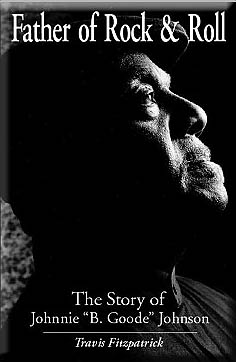
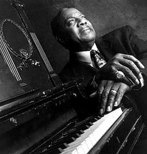
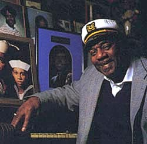

|  |
"Я нанял Чака на один вечер, когда мой саксофонист заболел. И этот "один вечер" затянулся почти на 30 лет".
|
Берри и Джонсон выступали неразлучно до первой половины 70-х. Гонорары за песни позволяли Берри жить безбедно и после отхода от активной гастрольной деятельности. Джонсон же был вынужден зарабатывать на жизнь, а то десятилетие было худшим для блюзмэнов.
В 1987 году снимался фильм о Чаке Берри "Hail! Hail! Rock 'n Roll". Кейт Ричардс ("Роллинг Стоунз") набирал оркестр для праздничного концерта, который должен был быть отснят для фильма. Ричардс знал музыку Берри досконально, поскольку именно она определила формирование его гитарного стиля. Соответственно, Ричардс был уверен, что без Джонни Джонсона концерт нельзя будет счесть удачным. Джонсон в это время работал водителем автобуса в доме престарелых. Участие Джонсона в одном концерте с мега-звездами, вроде Ричардса и Клэптона (были также Роберт Крей от блюза и Линда Ронстадт от кантри), вернуло его имя в тот круг, которому оно принадлежит по праву: в круг лучших музыкантов уходящего века. И сразу начались приглашения к выступлению в самых престижных залах и на запись альбомов с популярнейшими музыкантами. В 90-х Джонсон записал несколько сольных альбомов. Кроме того, его искусство можно оценить по его участию в знаменитых альбомах прошлого десятилетия:
|  |
|
Джонни Джонсон обладает стилем, в котором сочетаются изящество, ритмический напор и виртуозная скоростная игра. Не устаешь поражаться низкому КПД шоу-бизнеса, где такие таланты могут оказаться не у дел на годы и десятилетия. Счастье, что в отношении Джонни Джонсона справедливость восторжествовала.
"I'm having a whole lot of fun at 75. Life starts at 75 ... that's for sure."Johnnie Johnson |
 |
По сравнению с Джонсоном, у Берри было куда меньше опыта, зато куда больше энергичности и напористости. Благодаря одному тому, что у него была машина, он мог разъезжать по городу, выбивая концерты. Очень скоро лидерство в группе перешло к Берри, чему спокойный и не амбициозный Джонсон нисколько не противился, хотя до триумфа песни "Мейбеллин" их коллектив по-прежнему носил название "Джонни Джонсон трио". Берри и отнес демо-записи группы на фирму "Чесс". В 1955 году сингл "Мэйбеллин" возглавил ритмэндблюзовый хит-парад, и поднялся до №5 в поп-чартах. Это был рок-н-ролл с крепкими кантриблюзовыми корнями. Гитара и голос стояли для широкой публики на первом плане, и, записанный трио Джонни Джонсона, сингл вышел в свет под именем Чака Бэрри. Берри окончательно стал фронтмэном, но недооценивать фортепиано в записях Чака Бэрри - непростительно любителю блюза.
"Чак все тексты писал сам, - рассказывает Джонсон.- К этому я не имел никакого отношения. Но на репетициях между записями мы находили время посидеть вдвоем, гитара и фортепиано, чтобы найти музыку для того, что он сочинил."
Кейт Ричардз: Джонсон не копировал рифы Берри для фортепиано. Это Чак адоптировал их для гитары и подложил под них великолепные стихи. Если бы кто-то не подарил ему эти рифы - viola - песни бы не было... Только слова на бумаге.
Трэвис Фитцпатрик: Когда Джонсон нанял Берри, тот вошел в уже сложившийся бэнд (вместо саксофониста), и ему пришлось играть в тех тональностях, в которых играл Джонни и которые были более характерны для фортепиано, вроде До, или Соль, или Си-минор. Поэтому большинство песен Берри, по выражению Брюса Спрингстина, написаны в странных для гитары тональностях... В них играть гитаристу гораздо сложней. По счастью, у Чака были огромные пальцы, так что ему было проще.
Почему же Джонсону выпала незаметная роль?
Трэвис Фитцпатрик: Чак был шоуменом, а Джонни - очень сдержанным и спокойным. Он и петь-то начал только в 1990 году, на записи "Tanqueray". Его не вдохновляло быть фронтмэном. Ему нравилась сама музыка, нравилось играть на рояле... И случилось то, что и должно было случиться." К тому же, в те времена музыканты еще не могли оценить, насколько важны (для финансового благополучия) авторские права на песню.
Джонни Джонсон: У меня нет из-за этого никаких тяжелых чувств. Мы все были новичками в этом бизнесе, и не знали, что к чему. Радовались просто тому, что мы вместе, что играем для публики и слышим аплодисменты. У нас нет разногласий, ни по каким поводам. Мы время от времени общаемся и выступаем вместе.
После выхода книги судьба свела обоих в праздничном "официальном" концерте "Общенационального съезда губернаторов" в Сент-Луисе в августе прошлого года. Джонсон со своей группой выступал первым, затем на сцену вышел Чак Берри со своей.
Трэвис Фитцпатрик: Неожиданно в середине выступления Бэрри выталкивает своего пианиста со сцены и говорит: "Мне нужен Джонни". И перед всеми губернаторами называет Джонсона гением, своим партнерам и осыпает его самыми лестными похвалами. Он вывел Джонни на сцену, всячески его обхаживал и несколько раз сам переставал играть, чтобы указать на Джонни и передать ему соло.
Трэвис Фитцпатрик: Уж не знаю, как за спиной, но когда они вместе, Берри выглядит абсолютно счастливым. Он может грубить кому угодно, но всегда вежлив с Джонни.
Бывшие новости |
Январь-Февраль 1999 |
Март 1999 |
Ноябрь-Декабрь 1999
Январь 2000 |
Февраль 2000 |
Март 2000 |
Апрель 2000